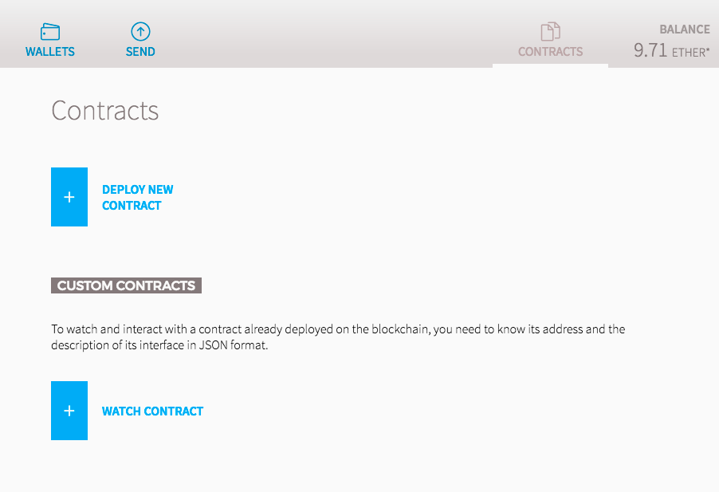
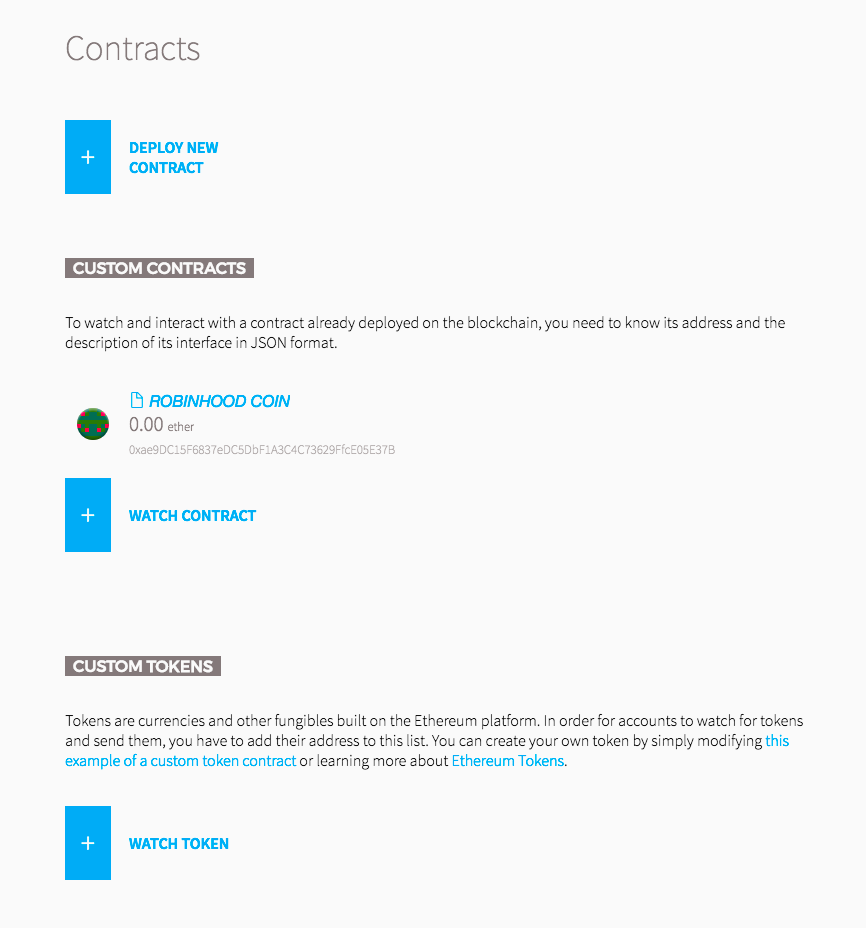
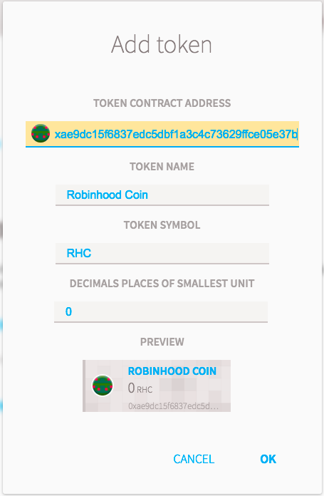

You need a wallet that allows you to execute contract code
You can get some Ethereum from the Rinkeby faucet
Under the CONTRACTS tab click WATCH CONTRACT.

The Watch contract pop up should appear and you will enter
The Robinhood Coin Contract should now be visible in your CONTRACTS tab.
To see how much Robinhood Coin you have you need to watch the Token.
Click on WATCH TOKEN.

You can then paste the in the TOKEN ADDRESS field.
The rest should automatically populate.

Click OK and you should then be able to see how much Robinhood Coins you have!